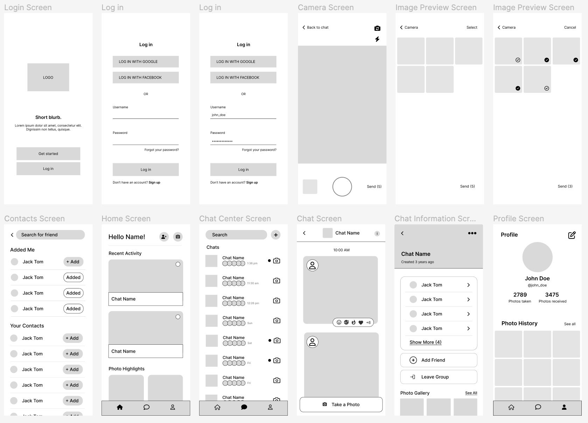

Daylight: An app for photo-only group chats.
Product Design • Prototyping • Mobile
TIMELINE
Nov 2022
2 weeks
TEAM
William Guo
Arushi Kalpande
Caitlin Rowlings
Context
Internet Friends is a startup that is building Daylight, an app for making
photo-only group chats. Our group designed an interactive application for
this startup from scratch using only its concept. This involved working through
a full iterative design process, from sketching ideas of the interface to
creating an interactive, high-fidelity prototype to conducting user testing
on a final, revised prototype. We then contacted the startup to share our
mockup with them.
Sketching & Wireframing
PRE-DESIGN THINKING
Before we dove into designing, we started by giving the concept a little more
context and fleshed out some of the core functionalities and user groups.
As a social app for creating photo-only group chats, Daylight allows users to stay in
touch with friends through a constant flow of images, and if you’re in the same
place as them, it makes sharing images even easier. Our group chose to create a
mobile app interface for this product, as the mobile format facilitates easy
photo-taking and sharing.
Target User Groups
🤳 Long-Distance Friends
This group consists of friends who might be far from each other and want to keep in touch.
The app would help this user group keep each other updated with their daily lives using a photo group chat.
👬 Friends Hanging Out
This group consists of friends who might have a hang-out together and want to have one place to
share their pictures.
The app is used to provide a record of that time and an easy way to
access all the images taken together.
SKETCHING
Each of our four group members then started brainstorming solutions by
sketching out low-fidelity wireframes, aiming to reflect as wide a variety
of screens and layouts as possible to get ideas flowing and to end with four
different possible designs for the app. Each of these designs made sure to
show the key functionalities of the app. These sketches were vital in
visualizing our ideas, weighing the benefits of alternative designs, and
avoiding premature decision-making.
 COMBINING IDEAS INTO WIREFRAME
COMBINING IDEAS INTO WIREFRAME
After sketching, we regrouped and discussed whether our sketches
were effective at solving the problem and diverse or creative.
We then combined our ideas into a single wireframe that we created in Figma.

Key Design Decisions
- Chat is more like a “feed” than a typical chat format with messages back
and forth
- User can take multiple photos at once before sending
- Users can preview and select the photos they’ve taken before sending them
- Users are not able to upload photos from their camera roll to foster
spontaneity and capturing/sharing photos “in the moment”
- Home page gives users opportunities to explore with recent activity and highlights
- Profile page allows users to see photo history and other personal information
Mockups
Next, our group created an interactive high-fidelity prototype based on the
wireframe we created, making sure to demonstrate all of the key interactions
of our app. We then presented our mockup to a larger group who provided us with
critique.
CRITIQUE NOTES
Improving the Sign in and Sign up page
Most people who download the app are going to be first-time users, so make the new
user flow as easy as possible. "Get Started" is confusing - change the wording or make
it larger. Existing users Sign in could be smaller under Sign up.
Improve clarity of sending photos
The group noted that they wanted to send photos without selecting them, and after clicking into the gallery and selecting photos,
they couldn't choose which group they'd be sent to. We had planned to add these functionalities but didn't initially incorporate them
into our preliminary prototype for critique.
Changing the "Chats" nomenclature
Some people were confused because "Chats" has the connotation of text messages and thus expected to see text
messages mixed in. They suggested to find a different word or terminology.
Positive feedback!
Overall, the group liked the visual design and thought the use of motion was thoughtful and went well with
the purpose and branding of the app. They also thought we were thorough with the error handling in our initial prototype.
Final Iteration

Signing In & Exploring Pages

Viewing & Adding Friends

Reacting to Photos & Chat Information

Taking & Sending Photos
USER TESTING
Finally, we conducted usability testing on our final prototype through UserTesting.com,
a remote user testing service. Having test users try out our interface is a valuable
source of feedback. Below are the links to the user testing videos.
The Context
We started by giving them a brief scenario to provide context for what they would be
doing with the app:
“You're on a weekend trip in Boston with some friends.
You open this app to take pictures and share them with your group and
see photos that have been sent to you by others.”
Then we determined 3 tasks for them to complete on the prototype, focusing on
the primary functionalities of the app. The tasks were rated by Success (Yes or No) and a
5 point rating scale (Very difficult to Very easy).
Task 1:
Sign in to the app and quickly browse each of the three pages.
Task 2:
You have unread messages in the "Hiking Trip 2022" group. Check the group and react to a photo.
Task 3:
Take 5 photos to send to the "boston!" group. When you're done,
feel free to send them all or select a few to send.
Post-test Questionnaire
We provided questions for users to answer at the end of testing.
None of them answered these questions, but they did provide general feedback at
the end.
- What frustrated or confused you the most about this app?
- If you had a magic wand, how would you improve this app?
- What did you like about the app?
- How likely are you to recommend this app to a friend or colleague
(0=Not at all likely, and 10=Very likely)?
Analysis
The scenario we gave the users was to imagine they were using the app to
share photos of a trip with their friends. Overall, all three of the videos
were in line with our expectations. They completed the tasks eventually with
few errors and were able to sign in to the app, take photos and share the photos
with the different groups. Below is a breakdown of user testing by task.
Task 1: Sign in & Explore!
Some users clicked the sign-up button first, but besides that, there was little
trouble signing in. Users had more challenge exploring the three tabs of
the app, specifically the home and the personal profile tabs.
Task 2: React to an Image!
This task was completed very easily. All three of the users clicked on the image
and successfully reacted to an image. One user noted, however, that
they would have preferred for an indication that a user could react to an image.
Task 3: Take & Send Pictures!
For the last task, users all successfully completed the task of sending images to
the group chat. A small difficulty multiple users faced, however, was they tried
to click the images directly when prompted to select specific images to send,
before realizing that there was a select button later.
POTENTIAL INTERFACE CHANGES
Based on the feedback we received from our user testing, we proposed several changes that we would
make to our next iteration of the prototype:
- Add the functionality for users to select images without
clicking the select button when deciding which images to send to the group.
- Add an indicator to each photo to remind users that they can react to the photo.
- Change the personal profile page of the user to make it more clear what the
images found in the gallery actually are, by making the wording more specific.
Conclusion & Learnings
Overall, we learned a lot about the importance of iterative design from this project.
Our final prototype was very different from our initial sketches.
It was a lot more fleshed out, due to all the feedback and corresponding changes
we made from the group critiques and the ui/ux testing. After hearing from the startup,
we look forward to considering their feedback as well.